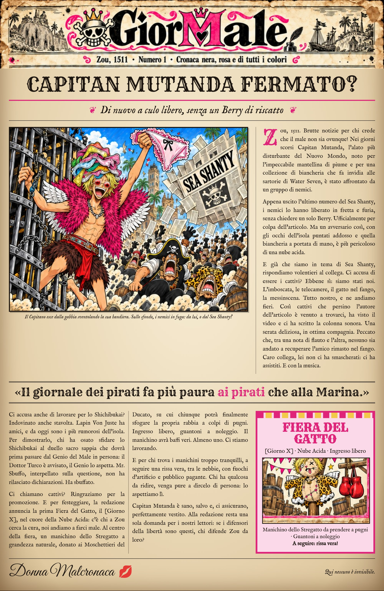

Gior
Male
Zou · Nuovo Mondo
Cronaca nera, rosa e di tutti i colori
Diretto da Donna Malcronaca
Ultimo numero
Archivio
Archivio
Tutti i numeri del GiorMale, dal più recente

N. 1 — Capitan Mutanda fermato?
Di nuovo a culo libero, senza un Berry di riscatto